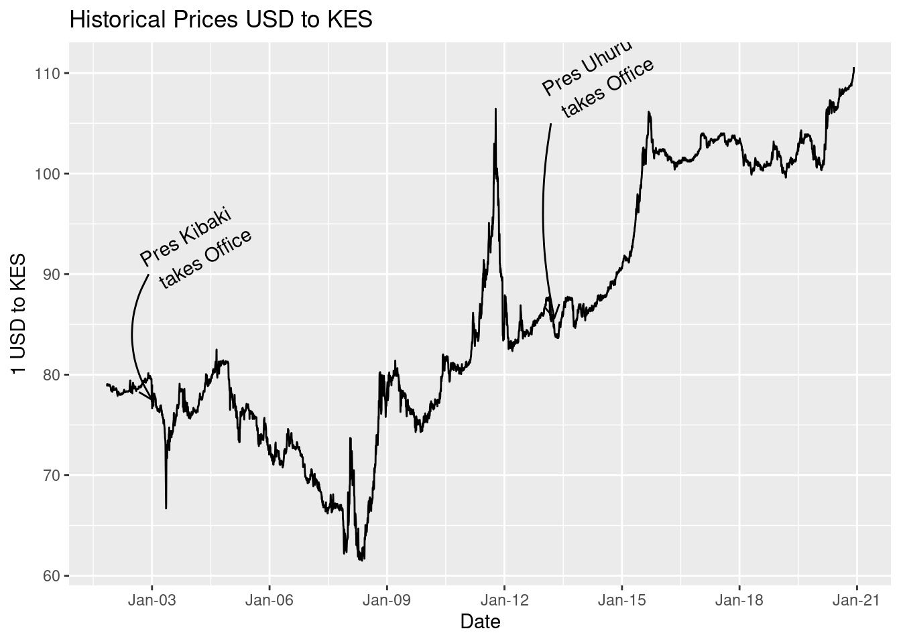
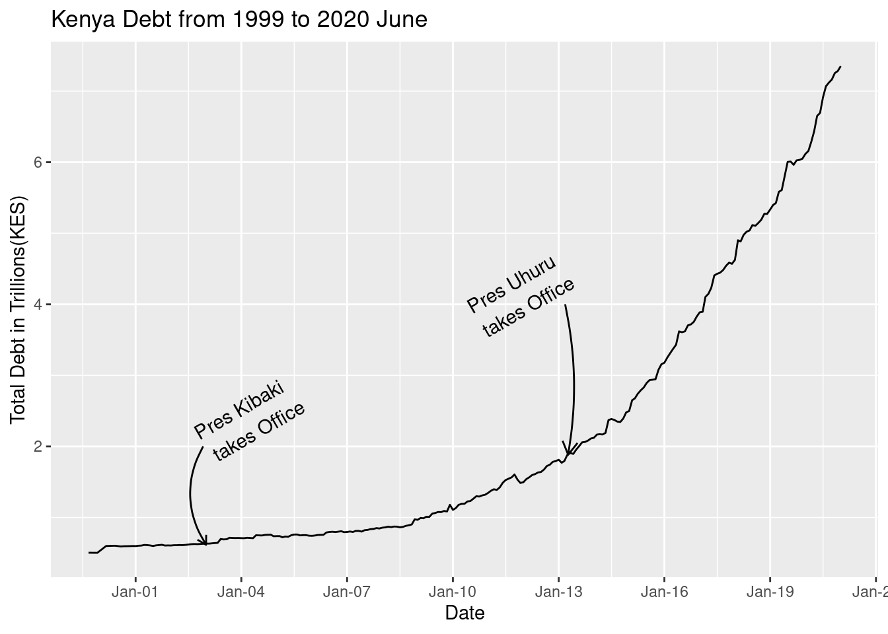
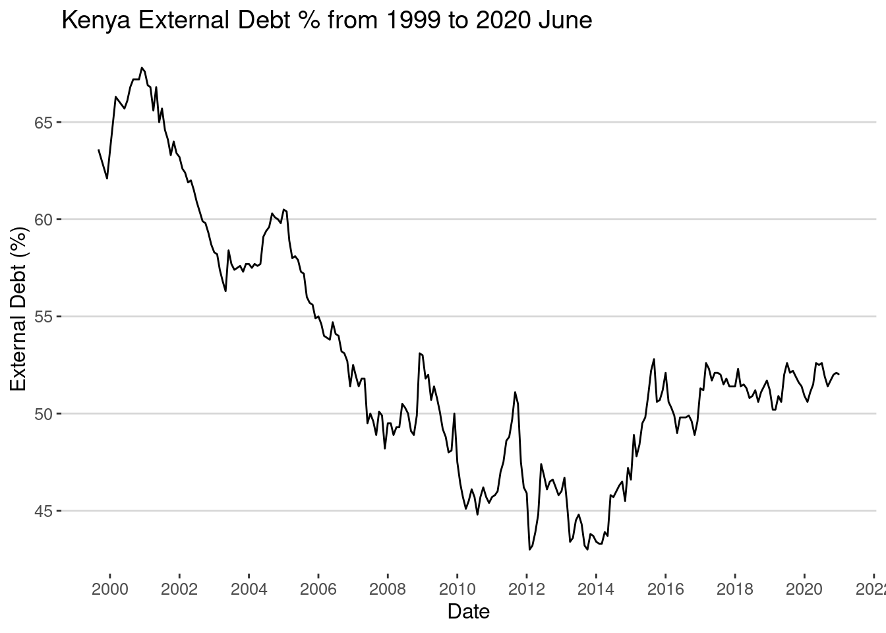
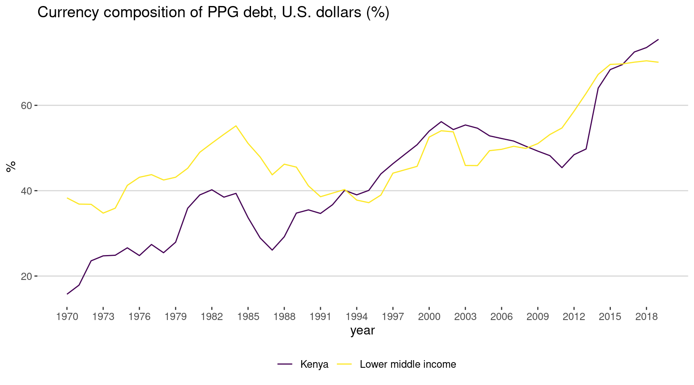
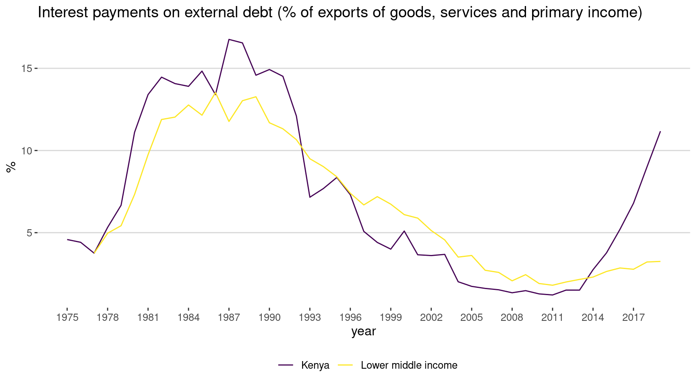
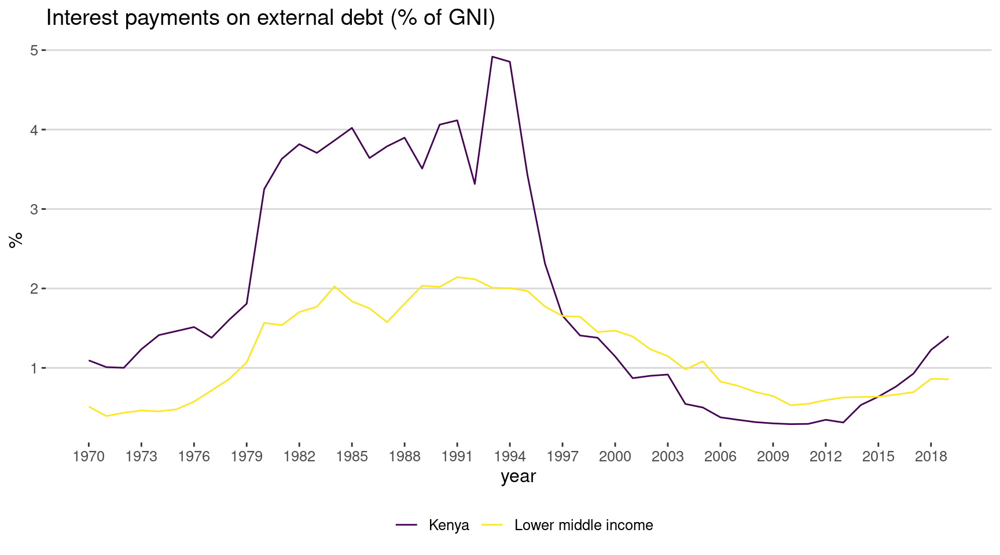
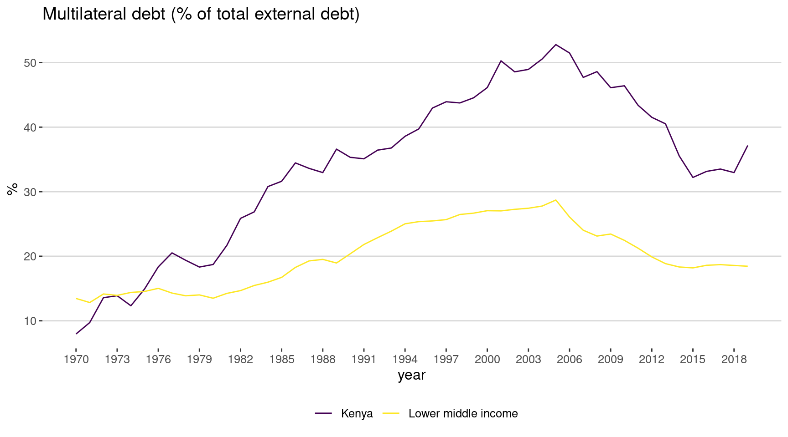
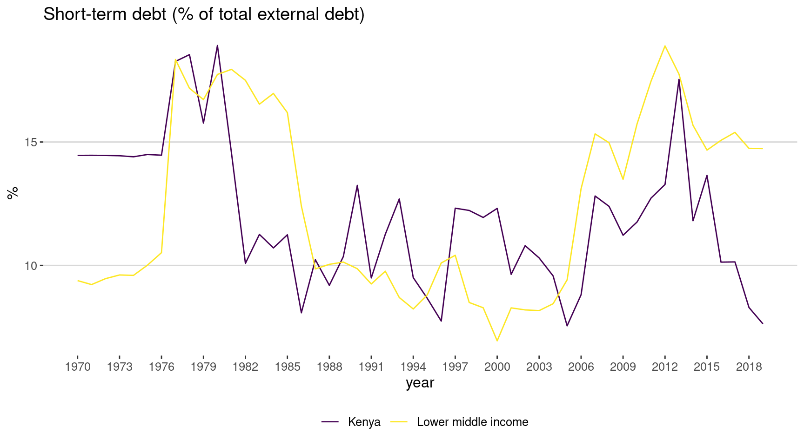
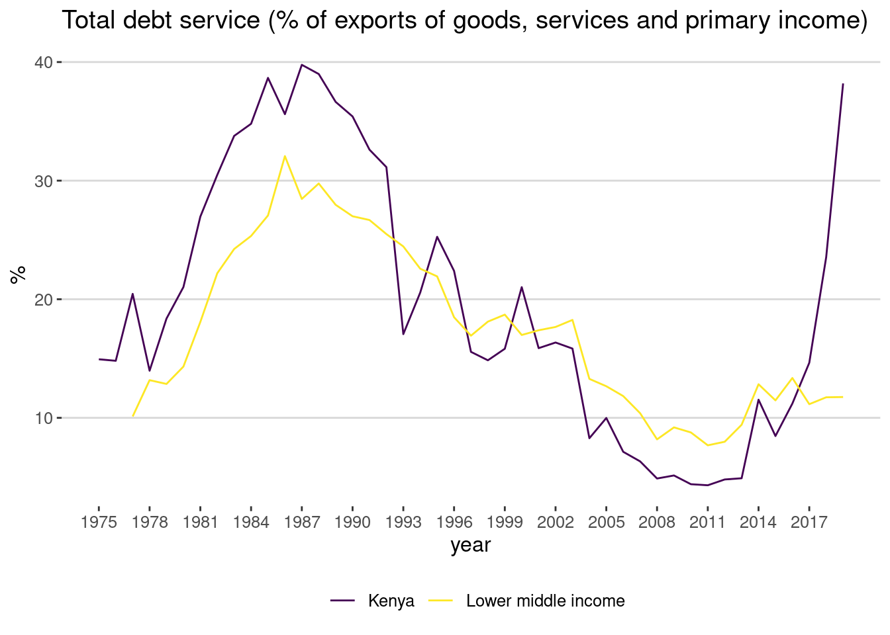

library(plotly)
library(tidyverse)
library(data.table)
library(DT)
library(ggthemes)
library(patchwork)
usd_kes_hist <- fread("USD_KES Historical Data.csv")USD-KES Hisotrical Data
usd_kes_hist[, Date := as.Date(Date, format = "%b %d,%Y")]x <- as.Date("2002-12-01")
x_end <- as.Date("2003-01-01")
y <-90
y_end <- 77.500
x_uhuru <- as.Date("2013-03-09")
x_end_uhuru <- as.Date("2013-04-09")
y_uhuru <-105
y_end_uhuru <- 85.600
dollar <- ggplot(usd_kes_hist,aes(Date, Price))+
geom_line()+
scale_x_date(date_breaks = "3 year", date_labels = "%b-%y")+
labs(y = "1 USD to KES", title = "Historical Prices USD to KES")+
annotate(
geom = "curve", x = x, y = y, xend = x_end, yend = y_end,
curvature = .3, arrow = arrow(length = unit(3, "mm"))
) +
annotate(geom = "text", x = x, y = y,
label = "Pres Kibaki \n takes Office", hjust = "left",
angle = 30)+
annotate(
geom = "curve", x = x_uhuru, y = y_uhuru,
xend = x_end_uhuru, yend = y_end_uhuru,
curvature = .1, arrow = arrow(length = unit(3, "mm"))
) +
annotate(geom = "text", x = x_uhuru, y = y_uhuru+2,
label = "Pres Uhuru \n takes Office", hjust = "left",
angle = 30)
dollar
kenya_debt <- read_csv( "kenya_debt/Public Debt (Ksh Million).csv") %>% setDT()
kenya_debt[, Date := as.Date(paste(Year, Month, "01", sep = "-"), format = "%Y-%B-%d")]
kenya_debt[, perc_external := round(`External Debt`/Total* 100, 1)]
kenya_debt[, Total := Total/1000000]x <- as.Date("2002-12-01")
x_end <- as.Date("2003-01-01")
y <-2.000000
y_end <- .6152281
x_uhuru <- as.Date("2013-03-09")
x_end_uhuru <- as.Date("2013-04-09")
y_uhuru <-4.000000
y_end_uhuru <- 1.8824059
debt <- ggplot(kenya_debt, aes(Date, Total)) +
geom_line()+
scale_x_date(date_breaks = "3 year", date_labels = "%b-%y")+
labs(title = "Kenya Debt from 1999 to 2020 June",
y = "Total Debt in Trillions(KES)")+
annotate(
geom = "curve", x = x, y = y, xend = x_end, yend = y_end,
curvature = .3, arrow = arrow(length = unit(2, "mm"))
) +
annotate(geom = "text", x = x, y = y,
label = "Pres Kibaki \n takes Office", hjust = "left",
angle = 30)+
annotate(
geom = "curve", x = x_uhuru, y = y_uhuru,
xend = x_end_uhuru, yend = y_end_uhuru,
curvature = -.1, arrow = arrow(length = unit(3, "mm"))
) +
annotate(geom = "text", x = x_uhuru, y = y_uhuru+.5,
label = "Pres Uhuru \n takes Office", hjust = "right",
angle = 30)
debt
my_breaks <- seq(15, 70, 5)
external <- ggplot(kenya_debt, aes(Date, perc_external)) +
geom_line()+
scale_x_date(date_breaks = "2 year", date_labels = "%Y")+
labs(title = "Kenya External Debt % from 1999 to 2020 June",
y = "External Debt (%)")+
theme_hc()+
scale_y_continuous(breaks = my_breaks )
external
debt_data <- fread("poverty_data/IDS-DRSCountries_WLD_Data.csv")nms_old <-debt_data[1,] %>% as.character()
nms_old [1] "Country Name" "Country Code" "Counterpart-Area Name"
[4] "Counterpart-Area Code" "Series Name" "Series Code"
[7] "1970" "1971" "1972"
[10] "1973" "1974" "1975"
[13] "1976" "1977" "1978"
[16] "1979" "1980" "1981"
[19] "1982" "1983" "1984"
[22] "1985" "1986" "1987"
[25] "1988" "1989" "1990"
[28] "1991" "1992" "1993"
[31] "1994" "1995" "1996"
[34] "1997" "1998" "1999"
[37] "2000" "2001" "2002"
[40] "2003" "2004" "2005"
[43] "2006" "2007" "2008"
[46] "2009" "2010" "2011"
[49] "2012" "2013" "2014"
[52] "2015" "2016" "2017"
[55] "2018" "2019" "2020"
[58] "2021" "2022" "2023"
[61] "2024" "2025" "2026"
[64] "2027" debt_data <-debt_data[-1,]
names(debt_data) <- nms_old
nms_new <- nms_old %>% tolower()
nms_new <- gsub("\\s|-", "_", nms_new)
nms_new [1] "country_name" "country_code" "counterpart_area_name"
[4] "counterpart_area_code" "series_name" "series_code"
[7] "1970" "1971" "1972"
[10] "1973" "1974" "1975"
[13] "1976" "1977" "1978"
[16] "1979" "1980" "1981"
[19] "1982" "1983" "1984"
[22] "1985" "1986" "1987"
[25] "1988" "1989" "1990"
[28] "1991" "1992" "1993"
[31] "1994" "1995" "1996"
[34] "1997" "1998" "1999"
[37] "2000" "2001" "2002"
[40] "2003" "2004" "2005"
[43] "2006" "2007" "2008"
[46] "2009" "2010" "2011"
[49] "2012" "2013" "2014"
[52] "2015" "2016" "2017"
[55] "2018" "2019" "2020"
[58] "2021" "2022" "2023"
[61] "2024" "2025" "2026"
[64] "2027" setnames(debt_data, nms_old, nms_new)
id_vars <- c("country_name", "country_code", "counterpart_area_name",
"counterpart_area_code", "series_name", "series_code")
debt_data <- melt(debt_data,
id.vars = id_vars,
variable.factor = F,
value.factor = F,
variable.name = "year")
debt_data[, year := str_trim(year)]
debt_data[, year := as.numeric(year)]
debt_data <- debt_data[!is.na(value)]indicator_name <- c("Currency composition of PPG debt, U.S. dollars (%)",
"Interest payments on external debt (% of exports of goods, services and primary income)",
"Interest payments on external debt (% of GNI)",
"Short-term debt (% of total external debt)",
"Multilateral debt (% of total external debt)" )
#debt_data[, unique(country_name)]
#debt_data[, unique(series_name)]
#"Uganda", "Tanzania"
ea_country <- c("Kenya", "Lower middle income" )
debt_data <- debt_data[country_name %in% ea_country & series_name %in% indicator_name]
debt_data_split <- split(debt_data, f = debt_data$series_name)
n <- length(debt_data_split)
my_plots <-htmltools::tagList()
my_plots <- list()
for (i in 1:n) {
df = debt_data_split[[i]]
my_title = df[, unique(series_name)]
mn = df[, min(year)]
mx = df[, max(year)]
breaks = seq(mn, mx,by = 3)
p = ggplot(df, aes(year, value, group = country_name, color = country_name) ) +
geom_line()+
theme_hc()+
labs(title = my_title, x = "year", y = "%")+
scale_color_viridis_d(name="")+
scale_x_continuous(breaks = breaks)
# my_plots[[i]] = ggplotly(p)
my_plots[[i]] = p
}
my_plots[[1]]
[[2]]
[[3]]
[[4]]
[[5]]
world_debt_data <- fread("poverty_data/API_DT.TDS.DECT.EX.ZS_DS2_en_csv_v2_1865914.csv",
skip = 4, header = T)
nms_old <- names(world_debt_data)
nms_new <- nms_old %>% tolower()
nms_new <- gsub("\\s|-", "_", nms_new)
nms_new [1] "country_name" "country_code" "indicator_name" "indicator_code"
[5] "1960" "1961" "1962" "1963"
[9] "1964" "1965" "1966" "1967"
[13] "1968" "1969" "1970" "1971"
[17] "1972" "1973" "1974" "1975"
[21] "1976" "1977" "1978" "1979"
[25] "1980" "1981" "1982" "1983"
[29] "1984" "1985" "1986" "1987"
[33] "1988" "1989" "1990" "1991"
[37] "1992" "1993" "1994" "1995"
[41] "1996" "1997" "1998" "1999"
[45] "2000" "2001" "2002" "2003"
[49] "2004" "2005" "2006" "2007"
[53] "2008" "2009" "2010" "2011"
[57] "2012" "2013" "2014" "2015"
[61] "2016" "2017" "2018" "2019"
[65] "2020" "v66" setnames(world_debt_data, nms_old, nms_new)
id_vars_debt <- nms_new[1:4]
world_debt_data <- melt(world_debt_data,
id.vars = id_vars_debt,
variable.factor = F,
value.factor = F,
variable.name = "year")
world_debt_data[, year := as.numeric(year)]
world_debt_data[, value := as.numeric(value)]
world_debt_data <- world_debt_data[!is.na(year)]
world_debt_data <- world_debt_data[!is.na(value)]
head(world_debt_data[country_name == "Kenya"], 10) %>%
datatable(options = list(scrollX= T))ea_country <- c("Kenya", "Lower middle income" )
world_debt_data <- world_debt_data[country_name %in% ea_country]
world_debt_data_split <- split(world_debt_data, f = world_debt_data$indicator_name)
n <- length(world_debt_data_split)
my_plots <-htmltools::tagList()
my_plots <- list()
for (i in 1:n) {
df = world_debt_data_split[[i]]
my_title = df[, unique(indicator_name)]
mn = df[, min(year)]
mx = df[, max(year)]
breaks = seq(mn, mx,by = 3)
p = ggplot(df, aes(year, value, group = country_name, color = country_name) ) +
geom_line()+
theme_hc()+
labs(title = my_title, x = "year", y = "%")+
scale_color_viridis_d(name="")+
scale_x_continuous(breaks = breaks)
# my_plots[[i]] = ggplotly(p)
my_plots[[i]] = p
}
my_plots[[1]]